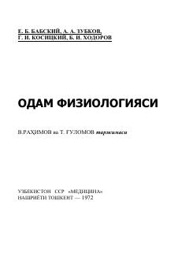

OFTibbiyot instituti talabalari uchun mo'ljallangan inson fiziologiyasi bo'yicha fundamental darslik.
Ushbu darslik tibbiyot instituti talabalari uchun mo'ljallangan bo'lib, inson organizmidagi hayotiy jarayonlar, a'zolar va to'qimalar faoliyatini chuqur yoritib beradi. Kitobda fiziologik jarayonlarning mexanizmlari, ularning tashqi muhitga moslashuvi va klinik ahamiyatga ega bo'lgan nazariy konsepsiyalar batafsil bayon etilgan.